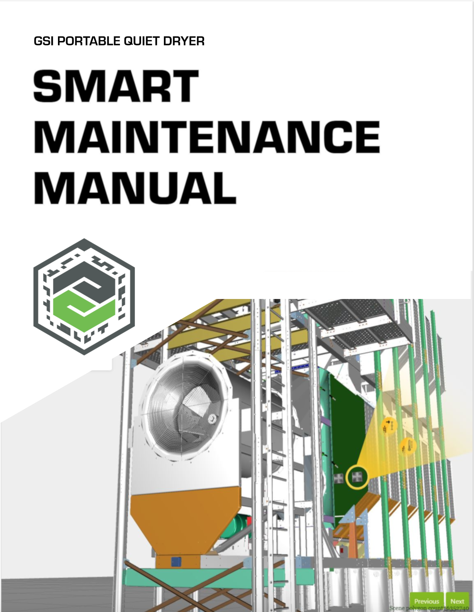
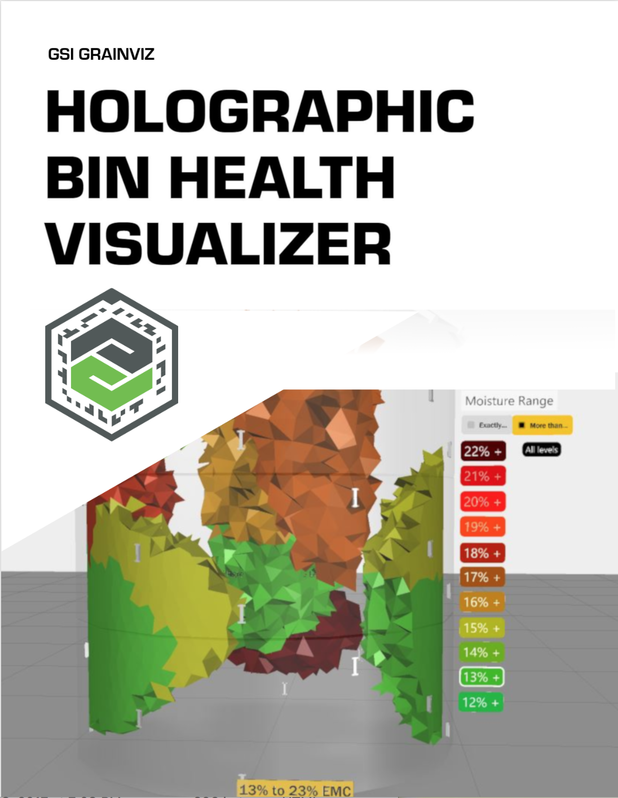
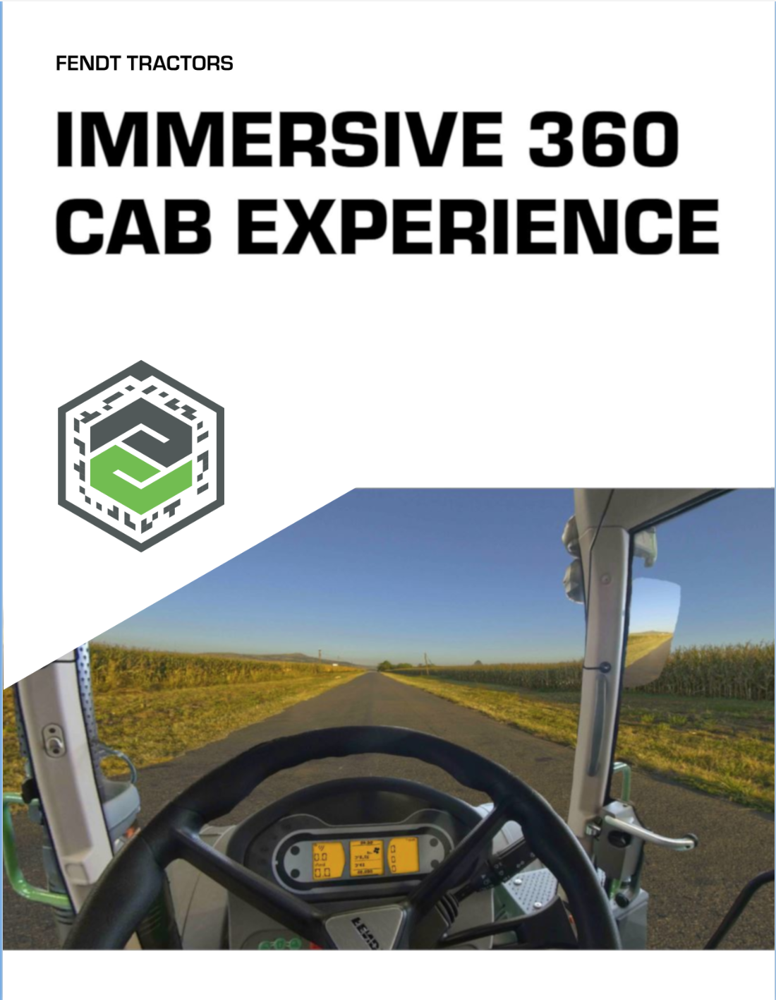
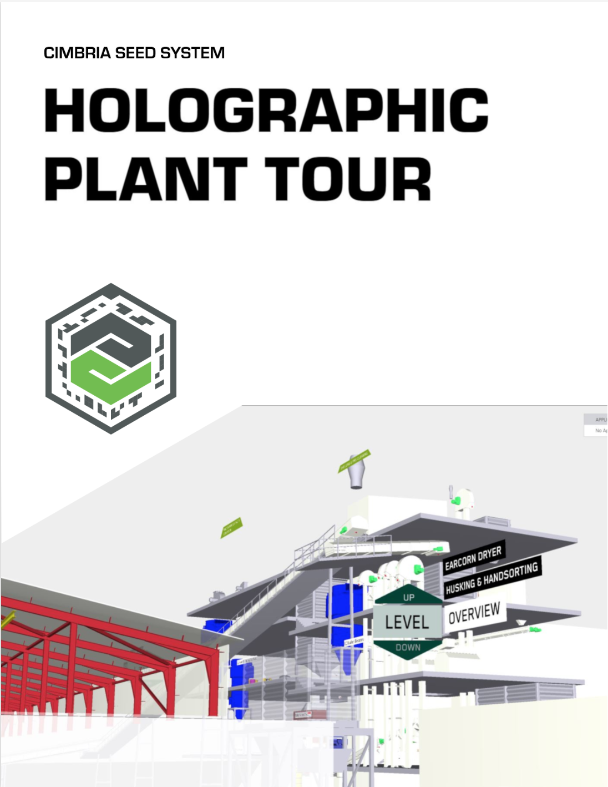
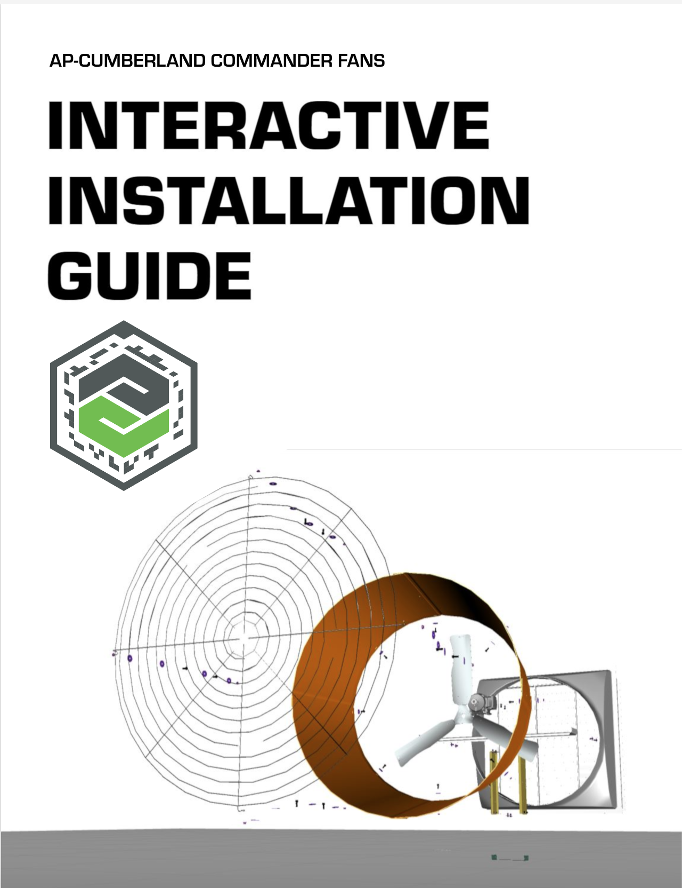

Recent Works
Prototyping the Future of Farming with AR and VR at the AGCO Acceleration Center
January - December 2019.
January 2019 • #tablet #maintenance #AR
GSI Portable Quiet Dryer: Smart Maintenance Manual
iPad • Vuforia Studio • Javascript • Creo Parametric
Farmers can dry grain in a sophisticated, computer-controlled dryer the height and length of a room, so the right level of detail for maintenance tasks is hard to depict in a traditional, paper manual. I developed an AR app that provides step-by-step guides that interactively highlight the location of parts for diagnosis and replacement procedures.
February 2019 • #hololens #smartFarming #AR
GSI GrainViz: Holographic Bin Health Visualizer
HoloLens • Vuforia Studio • Javascript • Paraview
The worth of a harvest’s yield can be made or broken by the how grain drying is controlled in the large, cylindrical grain bins farmers use. I delivered a HoloLens proof-of-concept app that expresses AGCO’s future vision of farmers having the power to walk around their grain storage and see that every bushel is healthy as if they had x-ray vision.
Here's a demo of the mobile version.If you would like to know more information about the Hololens version, please contact me.
Curious about GSI GrainViz? Here's a "live" demo of how the system’s customer portal makes it easy to remotely monitor and manage grain conditions, control fans and receive detailed inventory reporting via any Web-enabled device. Learn more at @GEAPSinfo Exchange Booth 2517 💛 pic.twitter.com/OGrDnOwHMF
— GSI (@GSI_Grain) March 11, 2019
March – April 2019 • #oculusGo #marketing #VR
Fendt Tractors: Immersive Cab Experience
Oculus Go • Unity • C# • Audacity
With Lavania Nair.
I developed an Oculus Go app that lets you virtually sit inside each of five models of the high-end Fendt tractor lineup and get a detailed look around.
For more information, please contact me.
April - May 2019 • #hololens #marketing #AR
Cimbria Seed System: Holographic Plant Tour
HoloLens • Vuforia Studio • Javascript • Creo Parametric
With Erick Zhou.
Cimbria designs machines to cover the entire receiving-to-cleaning-to-storing process of seed processing systems. We showcased these machines in a model of a real-life plant displayed in HoloLens.
To ensure the viewer would have a comfortable and navigable experience within the small field of view of the HoloLens, I modularized the plant with scene switching. This allowed us to expose the more sophisticated geometry of each part, creating a delightful miniature that encourages people to inspect it from different angles.
A video is unavailable at the moment. For more information, please contact me.
June 2019 • #tablet #installation #training #AR
AP Commander Fans: Interactive Installation Guide
With Erick Zhou.
Part numbers are hard to identify in paper manuals when a farmer is trying to find one for the part they need to replace. I programmed the ability to directly tap on the part you need and see the relevant information in our AR app.